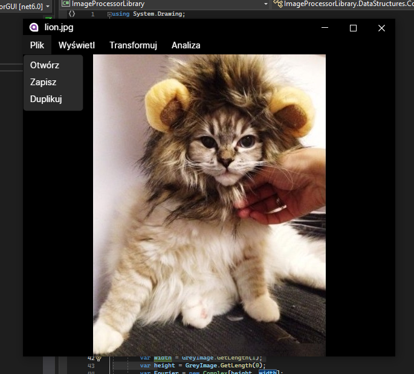

ImageProcessor
Projekt na zaliczenie przedmiotu Algorytmy Przetwarzania Obrazów.

Wprowadzenie
Aplikacja pozwala na wykonywanie szeregu operacji umożliwiających manipulowanie obrazami. Program została napisana w języku C# z użyciem frameworku Avalonia z wykorzystaniem biblioteki OpenCvSharp. Projekt został wykonany w ramach zajęć Algorytmy przetwarzania obrazów pod kierunkiem dr Anny Korzyńskiej.
Wymagania
Do poprawnego działania aplikacji wymagane jest środowisko uruchomieniowe .NET 6.0 w systemie Windows. Program był tworzony i testowany w środowisku Windows 10 i ta minimalna wersja systemu jest zalecana przy uruchamianiu aplikacji.
Uruchomienie Programu
Program jest uruchamiany poprzez wywołanie pliku wykonywalnego ImageProcessor.exe. Po włączeniu aplikacji należy wybrać plik z obrazem metodą Plik -> Otwórz. Funkcje programu uzyskuje się przez kliknięcie prawym klawiszem myszy na obraz i wybranie odpowiedniej zakładki.
Instalacja i uruchomienie kodu źródłowego
Projekt był tworzony i kompilowany z użyciem środowiska Visual Studio 2022. Do kompilacji wymagane są następujące pakiety:
- Avalonia
- Avalonia.Desktop
- Avalonia.Diagnostics
- Avalonia.ReactiveUI
- ScottPlot.Avalonia
- XamlNameReferenceGenerator
- CswvHelper
- OpenCvSharp4.Windows
- FFTW.NET
Funkcje programu
- Środowisko do pracy z obrazami
- Wczytywanie obrazu
- Zapisywanie obrazu
- Duplikacja obrazu
- Jednoczesne wyświetlanie wiele obrazów
- Algorytm tworzenia histogramu wczytanych obrazów monochromatycznych i kolorowych.
- Pokazywanie obrazów w różnych powiększeniach
- Algorytm rozciągania liniowego
- Algorytm rozciągania nieliniowego
- Algorytm wyrównywania przez equalizację histogramu
- Operacje jednoargumentowe: negacja
- Operacje jednoargumentowe: negacja,
- Operacje jednoargumentowe: progowanie binarne z zamianą liczby poziomów szarości z jednym lub dwoma progami wskazywanymi suwakiem i wpisanymi jako parametr,
- Operacje jednoargumentowe: progowanie bez zamiany liczby poziomów szarości z dwoma progami wskazanymi przez wskazywanym suwakiem i wpisanym jako parametr.
- Operacje punktowe wieloargumentowe: dodawanie obrazów z wysyceniem
- Operacje punktowe wieloargumentowe: dodawanie obrazów bez wysycenia
- Operacje punktowe wieloargumentowe: odejmowanie obrazów z wysyceniem
- Operacje punktowe wieloargumentowe: odejmowanie obrazów bez wysycenia
- Operacje punktowe wieloargumentowe: mnożenie przez liczbę całkowitą
- Liczenie różnicy bezwzględnej obrazów
- Algorytm wygładzania liniowego oparty na typowych maskach wygładzania.
- Wyostrzanie liniowe oparte na maskach laplasjanowych
- Kierunkowa detekcji krawędzi w oparciu o maski 8 kierunkowych masek Sobela
- Opracowanie algorytmu uniwersalnej operacji medianowej opartej o otoczenie 3x3, 5x5, 7x7, 9x9
- Implementacja detekcji krawędzi operatorami opartymi na maskach Sobela i Prewitta oraz operatorem Cannyego
- Algorytm segmentacji obrazów poprzez progowanie z jednym lub dwoma programi
- Algorytm segmentacji obrazów z wykorzystaniem progowania metodą Otsu
- Algorytm segmentacji obrazów z wykorzystaniem progowania adaptacyjnego
- Morfologia matematyczna: erozja
- Morfologia matematyczna: dylacja
- Morfologia matematyczna: otwarcie
- Morfologia matematyczna: zamknięcie
- Wyznaczanie cech obiektu binarnego
- Dodanie zakłóceń periodycznych do obrazu
- Usunięcie zakłóceń periodycznych z obrazu